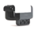

Onderdelen:
Voet, Kompas, Balsensor, Licht, Afstand
Voet
Op de programmategel:
| Schop wanneer? | Sleep hier een signaal naar toe dat ervoor zorgt dat de robot de bal schopt. Dit kan het signaal Direct zijn onder de Constante signalen. |
 Kompas
Kompas
Zendt de signalen:
| Azimut (°) | Dit is de richting van het kompas in booggraden. |
| Windroos | De windrichting, weergegevens als één van de Constant signaal: Dit kan zijn: Noord, Noordoost, Oost, enz. |
| Heen | Dit signaal wordt uitgezonden als de buggy in de richting van het doel van de tegenstander rijdt. Zie de opmerking onder de Beschrijving. |
| Terug | Dit signaal wordt uitgezonden als de buggy in de richting van het eigen doel rijdt. Zie de opmerking onder de Beschrijving. |
 Balsensor
Instellingen:
| Min. sterkte (%) | De minimale sterkte waarmee de bal moet zijn waargenomen om te garanderen dat de balrichting geldig is. Hoe verder de bal verwijderd is, des te slechter hij wordt waargenomen. Bij te kleine sterktes kan er verwarring met achtergrond licht op treden. Standaard op 30% ingesteld. |
Zendt de signalen:
| Bal voor | Dit signaal wordt uitgezonden als de bal recht voor de buggy wordt waargenomen. |
| Bal links | Dit signaal wordt uitgezonden als de bal links van de buggy wordt waargenomen. |
| Bal rechts | Dit signaal wordt uitgezonden als de bal rechts van de buggy wordt waargenomen. |
| Bal achter | Dit signaal wordt uitgezonden als de bal niet wordt waargenomen. In dat geval moet de bal zich achter de buggy bevinden. |
| Hoek 30° | Dit signaal wordt uitgezonden als de bal zich onder een hoek van ongeveer 30° links dan wel rechts voor de buggy bevindt. |
| Hoek 60° | Dit signaal wordt uitgezonden als de bal zich onder een hoek van ongeveer 60° links dan wel rechts voor de buggy bevindt. |
| Hoek 90° | Dit signaal wordt uitgezonden als de bal zich onder een hoek van ongeveer 90° links dan wel rechts voor de buggy bevindt. |
| Hoek 120° | Dit signaal wordt uitgezonden als de bal zich onder een hoek van ongeveer 120° links dan wel rechts voor de buggy bevindt. |
| Hoek (°) | Dit signaal bevat de hoek waar de bal zich links dan wel rechts voor de buggy bevindt. Dit kan zijn: 0° (recht voor), 30°, 60°, 90° of 120°. |
| Sterkte (%) | Dit signaal geeft aan hoe goed de bal wordt waargenomen. Hoe verder de bal verwijderd is, des te slechter hij wordt waargenomen. Bij te kleine sterktes kan er verwarring met achtergrond licht op treden. Zie de Instellingen. |